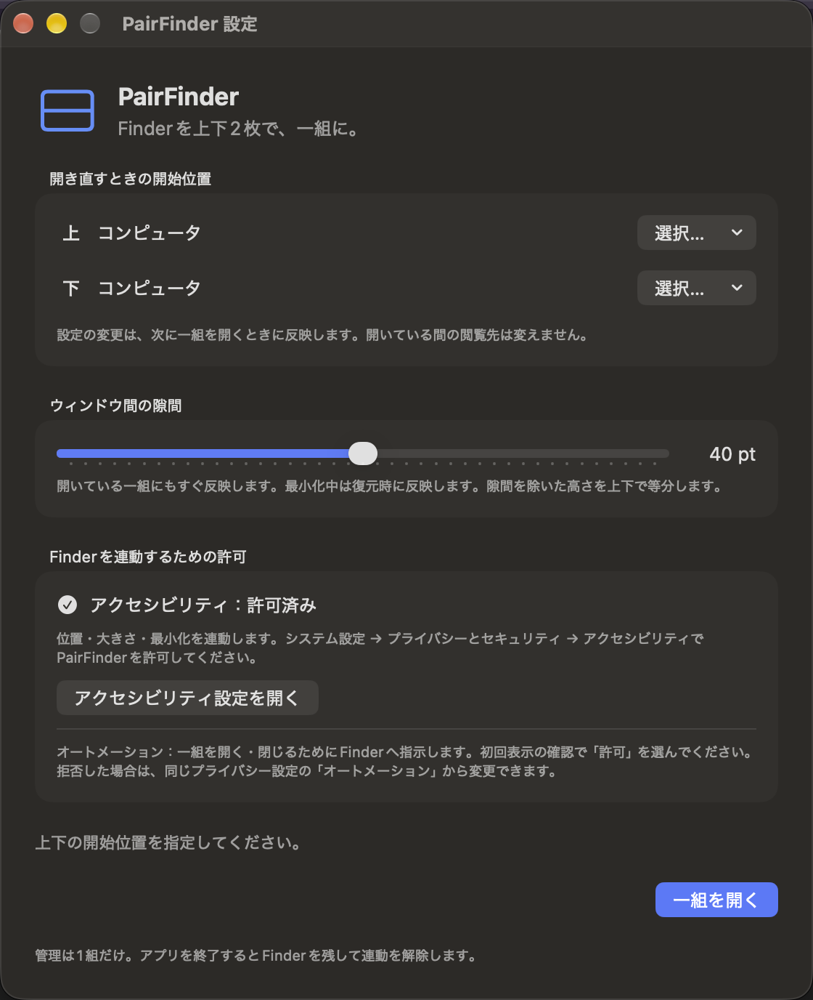

Finder を、そのまま使うために
資料を整理する場所と、取り出す場所。作業中と、保管先。2つの場所を上下に開いたまま、いつもの Finder でファイルを扱いたい場面に向けて作っています。
独自のファイル一覧へ置き換えるのではなく、Finder のウィンドウ2枚を外側から連動します。新しく作成した一組だけを管理し、すでに開いている別の Finder は管理対象にしません。
2枚を揃える手間を、少なく
移動も、大きさの変更も一緒に
どちらかのタイトルバーをドラッグすると、相手も追従します。一組の外周の端・角をドラッグすれば、幅と高さを揃えたまま全体をリサイズ。外周にポインタを合わせると、操作する方向のマークが出ます。
方向マークはウィンドウの外周に表示します。Finder が前面の間、システムカーソル自体は変わらない場合があります。中央の境界で上下の比率を変える機能はありません。
それぞれの開始位置と、好みの隙間
上下別々にフォルダまたは「コンピュータ」を指定できます。新しく開くときは、その場所をリスト表示で開きます。閲覧中は表示方法も移動先も自由に変更できます。
間の隙間は0〜80pt・2pt刻みで調整。表示中の一組にも反映し、隙間を除く高さを上下で半分ずつにします。前回の位置・全体の大きさも保存します。
隠す、戻す、閉じるを一組で
片方の黄色いボタンで2枚を最小化し、復元も連動します。PairFinder の Dock アイコンを再クリックすれば、見ていた場所を維持して前面へ。片方を閉じると相手も閉じます。メニューバーの専用メニューからも操作できます。
実際の設定画面


基本の使い方
以下はアクセス権のある試用者向けの手順です。一般向けのダウンロードは用意していません。
- 上下の開始位置を選ぶ。初回起動時の設定画面で「上」「下」の「選択…」から、それぞれフォルダまたは「コンピュータ」を指定します。
- Finder を操作する許可を与える。「アクセシビリティ設定を開く」から PairFinder を許可します。最初の Finder 操作時に表示されるオートメーション確認でも許可してください。
- 「一組を開く」で使い始める。新しい Finder 2枚が上下に開きます。移動はタイトルバー、リサイズは一組の外周から行います。
- 必要なら隙間を調整する。メニューバーの PairFinder メニュー →「設定…」を開き、スライダーを動かします。最小化中の変更は復元時に反映します。
- 作業に合わせて閉じる・解除する。2枚を閉じるなら赤いボタンや「一組を閉じる」。Finder を残すなら「連動を解除」、または「PairFinderを終了」を選びます。
開始位置の変更と、再表示は別の動作です。開始位置を変えた後は、現在の一組を閉じてから開き直すと反映します。開いている一組を Dock アイコンで呼び出すだけなら、現在の閲覧先を維持します。
操作の早見表
| したいこと | 操作と結果 |
|---|---|
| まとめて移動 | 上下どちらかのタイトルバーをドラッグ。 |
| 全体をリサイズ | 一組の外周の端・角をドラッグ。上下は同じ幅・高さを維持。 |
| 最小化・復元 | 片方の黄色いボタンで2枚を最小化。PairFinder の Dock アイコンで復元・前面表示。 |
| 一組を閉じる | 片方の赤いボタンや Finder の Command-W、または専用メニューの「一組を閉じる」。 |
| Finder を残す | 「連動を解除」または「PairFinderを終了」。2枚は通常の Finder として残る。 |
| 新しく開き直す | 一組を閉じた後にアイコンをクリック。指定した開始位置から新しい一組を作成。 |
連動を解除した2枚は再採用しません。解除後に「一組を開く／前面へ」を選ぶと、残った Finder とは別に新しい一組を作ります。
必要な許可と、情報の扱い
アクセシビリティは位置・大きさ・最小化・前面表示の連動に、オートメーション → Finderはウィンドウの作成・識別・閉じる操作に使います。システム設定の「プライバシーとセキュリティ」で変更できます。フルディスクアクセスや入力監視は要求しません。
上下の開始位置、隙間、一組の位置・大きさは Mac 内に保存します。ファイルの内容や利用情報を開発者のサーバーへ自動送信する機能はありません。共有やクラウド上の場所を開く場合、Finder や OS 側で通信が発生することがあります。
エラーや操作の診断情報は macOS のログに出力します。画面・ログを共有するときは、不要な名前やパスを確認してください。詳しくはプライバシーポリシーの PairFinder 節へ。
利用前に知っておきたいこと
- 上下1組・常に等分。左右配置、複数組、中央境界での比率調整はありません。
- 対象を確認できない場合は連動を解除。タブの追加・結合、フルスクリーン、Finder 再起動、画面構成の変更などではウィンドウを残して停止します。設定画面の案内を確認し、必要なら改めて一組を開いてください。
- すべてのウィンドウ管理環境には未対応。緑のボタン、タイル、Spaces、Stage Manager、ディスプレイをまたぐ操作の全面対応は保証していません。
- 2枚は独立した Finder です。応答速度や最小化アニメーションの影響を受けます。長時間・高負荷や Finder の表示設定の違いは継続検証中です。
開発状況・入手について
開発中・非公開です。アプリ本体とソースコードの一般公開・一般配布は行っていません。公開時期・価格は未定で、機能や画面は変更される場合があります。
掲載内容は 時点の 0.1.5（6）の実装・仕様・検証記録に基づきます。アクセス権のある利用者向けには、Private リポジトリの Releases で Developer ID 署名・Apple 公証済みの Universal ZIP を提供しています。
対応下限は暫定 macOS 14。Apple Silicon / Intel 向けにビルドしていますが、実行確認は macOS 27.0.1 / Apple Silicon で行っています。macOS 14〜26 と Intel Mac での実行は未確認です。Mac App Store 対応は未実施です。
単体15件と、公証済み配布版の設定・実 Finder 連動・既存 Finder を変更しない検証の成功を記録しています。0.1.4 には本人の動作問題なしの報告がありますが、全方向の物理ドラッグや長時間利用など、すべての条件を検証し終えた意味ではありません。